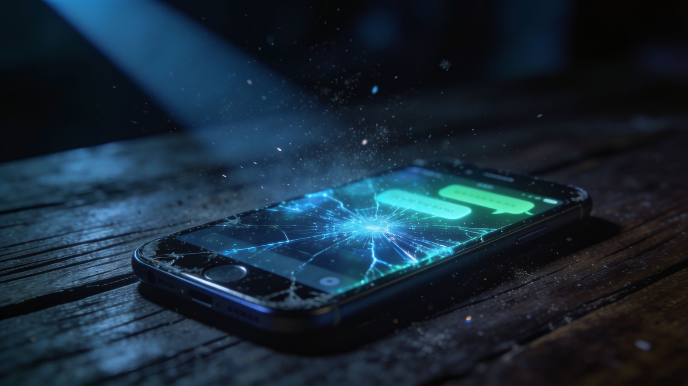
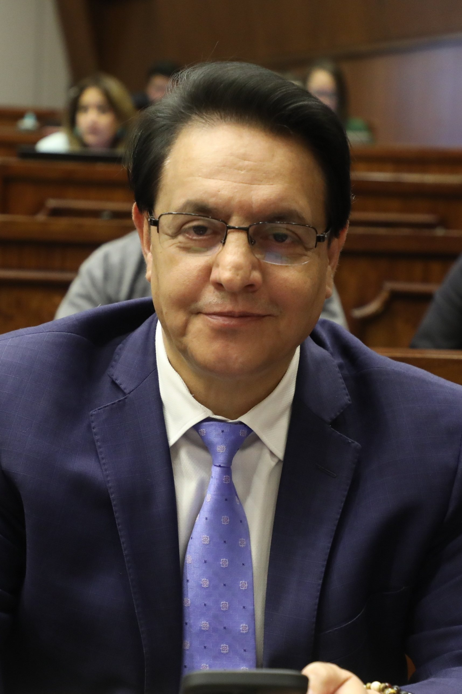
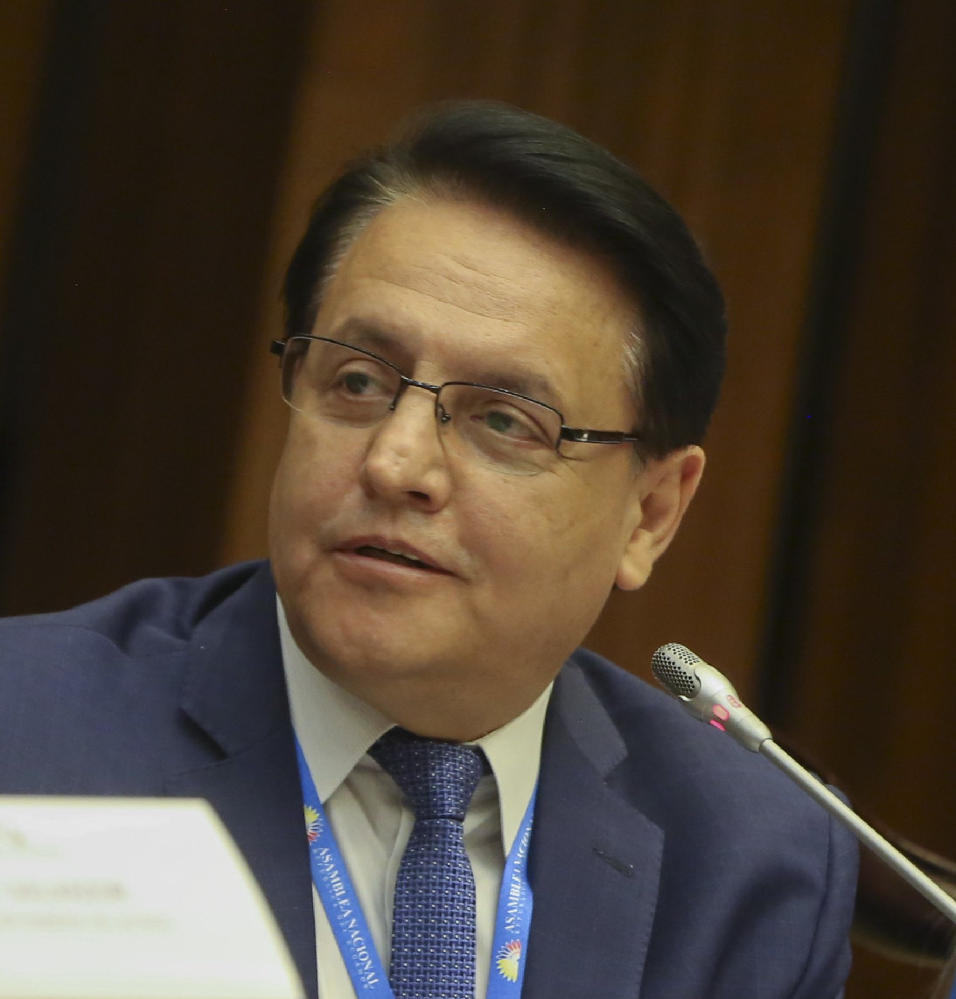
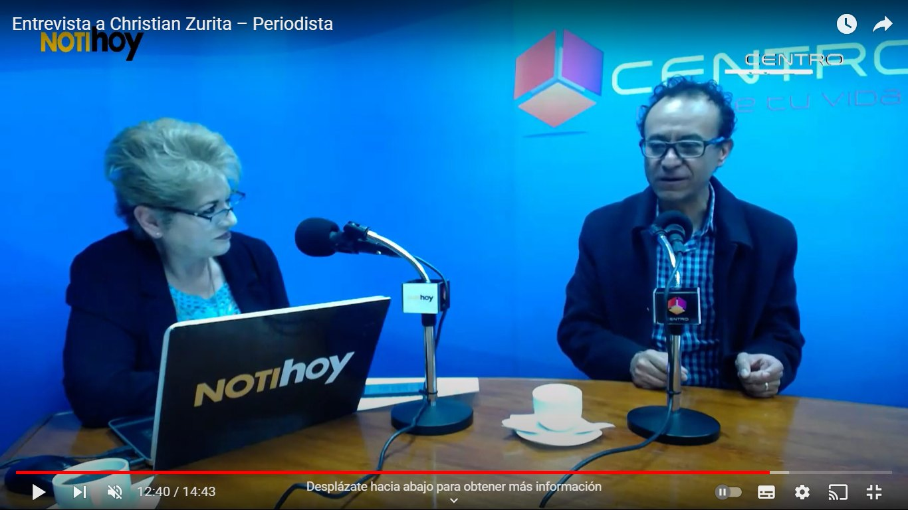
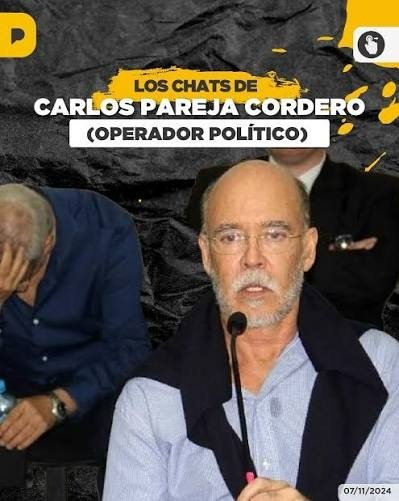
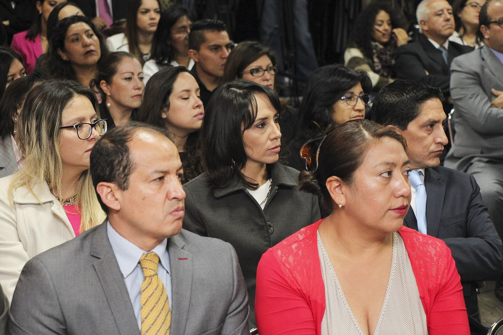
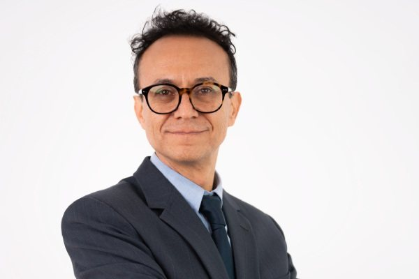
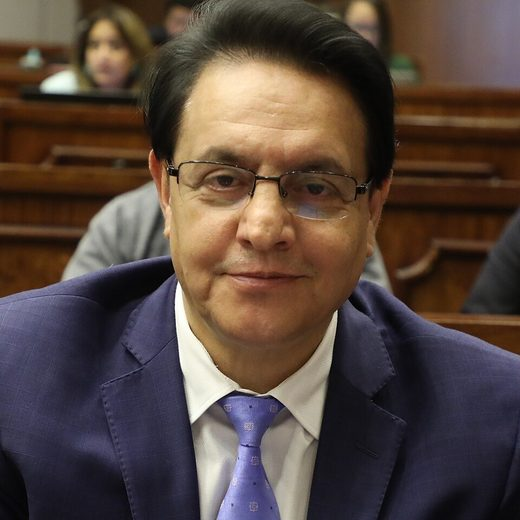
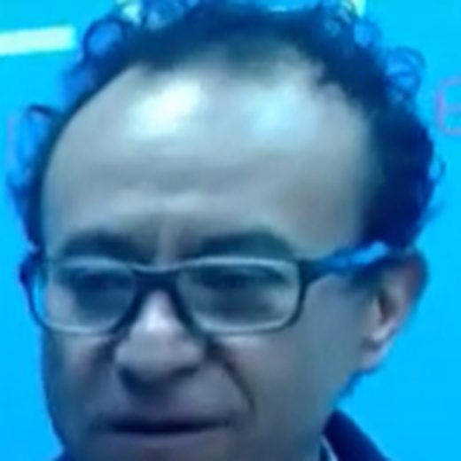

Parte 4 · 12 nov 2024 · Las amenazas y la compra de jueces
Fernando Villavicencio, candidato presidencial, fue asesinado el 9 de agosto de 2023 al salir de un mitin en Quito. Su teléfono pasó por un capitán, un sargento, un asistente, su hija y un colega que le hizo una copia para el FBI. La copia volvió a Ecuador, se filtró y llegó a La Posta: 9.000 chats y 68 gigabytes. Durante un mes el equipo verificó conversación por conversación. Publicó cuatro programas sobre los vivos: la fiscal, el operador político que pagaba cada mes, el colega que cobraba, los jueces, y las amenazas: la velada de Norero y la del Gobierno de Lasso.
Dile a los chicos que el jueves cumplo con octubre. Se me cae la cara de vergüenza.
Maestro, dile a los chicos que diciembre se hizo hoy. Mil disculpas, con atraso pero cumplí.
Papá Noel también se demora. Gracias.
Hermano, ya está enero. Ha sido un mes mágico porque he podido hacerlo temprano.

Fernando Villavicencio fue periodista, fiscalizador y presidente de la Comisión de Fiscalización de la Asamblea antes de ser candidato presidencial. Lo mataron a tiros el 9 de agosto de 2023 al salir de un coliseo en el norte de Quito, once días antes de la elección. Antes de entrar le entregó su teléfono al capitán Cristian Cevallos, su jefe de seguridad. Según la reconstrucción de La Posta con gente cercana a la familia, el capitán se lo dio a un sargento, el sargento lo llevó a la Clínica de la Mujer, César Gonzaga lo recogió y se lo entregó a Amanda Villavicencio, la hija. Ella se lo confió a Christian Zurita, colega y amigo de su padre.


Zurita, acompañado de otra persona, llamó a un hacker con el que solían trabajar, hizo un espejo del teléfono y viajó a Nueva York para entregar una copia al FBI, que había entrado a la escena del crimen a las pocas horas, autorizado por Lasso a pedido del embajador Michael Fitzpatrick. Se quedó con otra copia. El FBI extrajo los mensajes, recuperó imágenes y en diciembre de 2023 envió a la Fiscalía de Ecuador una copia de la copia de Zurita, donde quedó bajo un número de cadena de custodia. La cadena se rompió. El 6 de noviembre de 2024 ya circulaba el enlace a la nube publicado por la candidata correísta Priscila Schettini; ese día la Fiscalía emitió un comunicado diciendo que la información era falsa y Zurita publicó un video. A la mañana siguiente, a las 9 y 27, La Posta salió al aire con el resultado de un mes de trabajo sobre su propia copia, entregada por una fuente de la Fiscalía: no era la de Zurita. Boscán dijo tener los números de origen de los mensajes, las fotos y los documentos con sus metadatos.
Entrega su teléfono al capitán Cristian Cevallos, su jefe de seguridad, antes de entrar al coliseo. 9 de agosto de 2023
Recibe el teléfono del capitán y lo lleva a la Clínica de la Mujer
Asistente, jefe de seguridad según Amanda, y candidato a la Asamblea. Recoge el teléfono y decide dárselo a la familia
Hija. Entrega el teléfono, la computadora y otros aparatos de su padre a un colega de él
Llama a un hacker, hace un espejo, viaja a Nueva York y entrega una copia al FBI. Se queda con otra
Extrae mensajes, recupera imágenes y envía una copia a la Fiscalía de Ecuador en diciembre de 2023
La guarda bajo cadena de custodia. Se filtra
Recibe la copia de una fuente de la Fiscalía General del Estado. Un mes de verificación. 7 de noviembre de 2024

Antes de publicar hubo un debate que el programa hizo público: por qué meterse con un muerto, por qué violar su intimidad, si valía la pena. La respuesta fue que las conversaciones tienen dos interlocutores y que el otro está vivo. La Posta dijo que condenaba la publicación indiscriminada de los miles de chats, que había excluido lo que exponía a fuentes o la vida privada, y que se limitaría a lo que tocara dinero público, contratos, jueces y funcionarios. Para verificar, contrastó los chats con los contactos del teléfono: una veintena el primer día, unos treinta al cierre. Antonio Ricaurte, Pancho Jiménez, Ricardo Vanegas, Carlos Rojas, Martín Pallares, Fausto López, Fermín Vaca y los propios periodistas del medio confirmaron que sus conversaciones coincidían. La presidenta del CNE, Diana Atamaint, confirmó a La Posta la conversación del 21 de febrero de 2021 en que la fiscal Salazar le pedía evitar allanamientos al Consejo, y que Salazar le había reenviado a Villavicencio. La Fiscalía, al responder por escrito, admitió que el teléfono estaba en custodia del FBI y que la copia que ella recibió era parte de la investigación previa por el crimen. Solo dos personas negaron sus chats: la fiscal Diana Salazar y Carlos Pareja Cordero. Los trolls fabricaron un chat con fecha 31 de febrero para sugerir que eran editables.
La primera entrega fue sobre Carlos Pareja Cordero, Charlie o Capaco, abogado guayaquileño, primo de Carlos Pareja Yannuzzelli, excolaborador del Gobierno de León Febres Cordero, operador político, amigo personal de Guillermo Lasso y de Villavicencio. Había saltado en el escándalo de Odebrecht como intermediario de un pago y demandó en Estados Unidos a Diana Salazar cuando ella dirigía la UAFE; según La Posta, hubo un pacto que ambos niegan: él retiró la acusación, ella pudo ser fiscal general y él volver del exilio en Perú, donde Boscán, Velásquez y Vivanco lo visitaron. Cuatro años de conversación. El 2 de noviembre de 2021, cuando Villavicencio ya era asambleísta, Pareja le escribe: dile a los chicos que el jueves cumplo con octubre, se me cae la cara de vergüenza. El 23 de diciembre: hoy hice lo de noviembre. El 28: diciembre se hizo hoy. Villavicencio responde: Papá Noel también se demora. El 19 de enero de 2022: ya está enero, ha sido un mes mágico porque he podido hacerlo temprano. La respuesta: gracias a ti funciona ese portal. El único portal de Villavicencio en 2022 era Periodismo de Investigación, que compartía con Zurita y dirigía su hija Amanda; el yerno de Naím Massú le hizo al portal tres depósitos de 7.000 dólares, según los chats.

Hay un mensaje que explica por qué este archivo importa. El 9 de julio de 2022 Pareja Cordero le escribe a Villavicencio un nombre clave del sector eléctrico: Rubén Cherres, alias El Platinado, ahijado de Danilo Carrera y padrino del ministro Xavier Vera. Villavicencio responde: me habían pasado ese nombre, entiendo que Guillermo lo sabe. La Posta publicó El Gran Padrino, con Cherres y Carrera en el centro, el 9 de enero de 2023, seis meses después. Los chats muestran que la información existía y en qué manos estaba: el 9 de enero de 2023 Marlon Puertas le reprocha que se te adelantaron los pillos postas, y Villavicencio contesta que él se la dio a Zurita dos meses antes y no la publicaron.
Dile a los chicos que el jueves cumplo con octubre. Se me cae la cara de vergüenza.
Maestro, dile a los chicos que diciembre se hizo hoy. Mil disculpas, con atraso pero cumplí.
Papá Noel también se demora. Gracias.
Hermano, ya está enero. Ha sido un mes mágico porque he podido hacerlo temprano.
Faltaba más, hermano. Gracias a ti funciona ese portal. Mil gracias.
Luque y Cherres subastan al mejor postor las unidades de negocio de CNEL y CELEC. Es un asco.
Eres un francotirador.
Ustedes permitieron que se arme un fraude en la consulta, no hicieron control electoral y ahora amenazas con el tema de Naín. Me parece un chiste.
¿También te vas a referir a los hallazgos en los allanamientos de la semana pasada?
Mañana es la audiencia, a las 2:30.
Ya voy a escribirle a mi amigo. Ya está hablado con la jueza.
Mañana tengo juicio 2:30 con la misma jueza.
Todo está bajo control.
Todos están calladitos. Qué miedosos.
¿Sabe qué va a pasar en Singue?
Dos a uno. Agridulce.
Usted debe presidir la Comisión de Fiscalización.
En eso estamos. Una llamadita a Guillermo ayudaría.
No para publicar. Es IP, solo para usted. Si lo publica, delito.
La fiscal. Los chats con Diana Salazar que La Posta mostró van de 2020 a 2021. El 25 de enero de 2021, antes de que se leyera la sentencia del caso Singue, él le pregunta qué va a pasar; diecinueve minutos después ella responde: dos a uno, agridulce. El 16 de mayo de 2021 ella le dice que debe presidir la Comisión de Fiscalización; él: en eso estamos, una llamadita a Guillermo ayudaría. El 21 de junio de 2021, sobre el caso que Cuesta abrió contra su familia: está en manos de la amiga fiscal. El 6 de diciembre de 2021 ella le pasa una grabación de una indagación reservada sobre un pariente de la vocal de la Judicatura Maribel Barreno: no para publicar, es IP, solo para usted, si lo publica delito. El 12 de septiembre de 2020, sobre un fiscal denunciado: ya lo mando a un cantón alejado. Sobre Coca Codo, en junio de 2021: es imperativo coordinar tiempos para no chocarnos. La Fiscalía respondió en cinco puntos: la fiscal no difundió información restringida, no amenazó a nadie, las comparecencias son competencia de la Asamblea y no puede abrir una investigación contra sí misma.

Entre los pagos había instrucciones. En el caso Saab, Pareja insiste en ir contra Simón Parra, del Banco Amazonas, y contra Jorge Zavala, y en dejar fuera a León Roldós y al exvicepresidente Alberto Dahik. Le dicta a quién llamar a la comisión, qué informe pedir al Banco Central, a quién no recibir y qué preguntas hacer; sobre el asambleísta Marcos Troya: eso es billete, así debe ser. Su obsesión es el caso Petrochina y su enemigo número uno, Enrique Cadena. El 28 de mayo de 2022 le manda la foto de la piscina, Aleaga con Cortázar y Jordán, y la investigación sobre la casa de Xavier Jordán conectada con Leandro Norero, que Villavicencio publica como propia: el origen de la denuncia que le costó la carrera a Ronny Aleaga. El 10 de julio de 2022 le escribe que Luque y Cherres subastan al mejor postor las unidades de negocio de CNEL y CELEC: siete meses antes de que La Posta publicara El Gran Padrino, el entorno de Lasso ya lo sabía. En noviembre de 2022 le pide que no deje de hablar con la señora, la fiscal, para que entienda que es aliado. En agosto de 2022 Villavicencio consigue un puesto en CNT para un recomendado, mañana estará sentado en la Regional de Manabí, y en enero de 2023 pide un nombre para detener un despido allí. La Posta sostuvo que un periodista que cobra de un operador es antiético, pero que un legislador que lo hace puede estar cometiendo un delito. Pareja Cordero negó la veracidad de los chats: no hizo pago alguno, no fue amenazado por Salazar, no gestionó cargos.
La segunda entrega, el 8 de noviembre, fue sobre dinero. Pagos de María Verónica Jairala, a quien Villavicencio describía en sus chats como la delegada de la familia Isaías en Ecuador, la primera prueba directa de una relación que siempre negó: documentos en efectivo que retiraban César Gonzaga o su hija en la garita de ella, y transferencias a cuentas de terceros, nunca a la suya; Gladys Janeth Santos confirmó a La Posta que los depósitos se hicieron en su cuenta y que ella devolvió la plata, y un exfuncionario del IESS contó que Villavicencio le conseguía contratos de coactivas. En junio de 2021 Jairala le pidió hablar con Salazar para impulsar acciones contra JJ Franco por Odebrecht; tres meses después allanaron a Franco. Contratos con el grupo El Juri, de Kia, a nombre de su hermana Alexandra Villavicencio, por servicios que ella no gestionaba; era él quien los renovaba como funcionario público, dos años después de haber denunciado a ese mismo grupo. Alexandra llevaba una hoja de cálculo con las cuentas. En su declaración patrimonial, Villavicencio declaraba como único ingreso su sueldo. Chats con Aparicio Caicedo, secretario jurídico de Lasso: le pide perfiles para telecomunicaciones, tres con vínculos societarios con su hermana, le pregunta cómo votará Troya y, sobre todo, Caicedo gestiona ante el SRI el caso de lavado que Santiago Cuesta denunció contra la familia Villavicencio: ya le jalé las orejas. Chats con Ana Belén Cordero, vicepresidenta de Fiscalización: le pasa una proforma para financiar el programa de él con empresarios, eso hay que hacer para neutralizar a Boscán, escribe Villavicencio; ella lo negó. Y Lasso. El 26 de enero de 2023, tras los allanamientos del caso Encuentro, incluida la casa de Naím Massú, le pregunta si también se referirá a esos hallazgos; él responde que están bajo cadena de custodia. El 7 de febrero, la última conversación: eres un francotirador. La respuesta: ustedes permitieron un fraude en la consulta y ahora amenazas con el tema de Naín; será la mejor oportunidad para explicar tu relación con Jordán y con aduanas.
Contar la verdad te deja solo, pero también te libera. Es el precio que hay que pagar por no ser esclavo de la mentira.
Roberto Saviano, citado al abrir la primera entrega
La tercera entrega, el 11 de noviembre, transmitida desde el estudio de Los Ingobernables por los apagones, se llamó trollcenters y periodismo tarifado: cómo se coordinaban publicaciones entre la política y ciertos periodistas. Marlon Puertas, de La Historia, le pide gestionar pauta pública del Banco del Pacífico con sus influencias, un auspicio urgente porque está requebrado, un par de reales de anticipo; hay una transferencia directa de Villavicencio a su cuenta el 4 de octubre de 2022. El 7 de septiembre de 2022 Puertas escribe: el compromiso es acabar con La Posta, y Villavicencio contesta: firmado. Álvaro Rosero, de Radio Exa, le pide en febrero de 2021 contacto con el responsable económico de la campaña. Una venezolana lideraba un troll center que cobraba 5.000 dólares que entregaba el capitán Cevallos; para la campaña de 2023 Sharon Jiménez propone repartir los aportes en montos menores a 400 dólares. La Data le tarifó una propuesta en 8.000 dólares más IVA; su dueño dirige el medio desde la cárcel, condenado por feminicidio. José Najas fabricó un video falso contra la asambleísta Viviana Veloz y un informe de 60 páginas sobre cuentas inexistentes de Boscán, hecho por un exdirector de Mossack Fonseca. Y Amanda Villavicencio, directora del portal de su padre, cobraba los depósitos del yerno de Naím Massú; Boscán la retó a abrir sus cuentas de 2020 a cambio de abrir las suyas.
La cuarta, el 12 de noviembre, fue sobre jueces y amenazas. El 6 de noviembre de 2022 su hermano Eduardo, dueño de una pizzería, le avisa de una audiencia al día siguiente, derivada de la denuncia de Cuesta por lavado; Villavicencio: ya voy a escribirle a mi amigo, ya está hablado con la jueza. El 23: mañana tengo juicio con la misma jueza; todo está bajo control. Chats con Claudia Garzón, la colombiana encargada de la pacificación de las cárceles nombrada por Lasso y procesada después como parte de la estructura de Norero: insistía en ponerlo en contacto con Leandro Norero; él no le prestó atención hasta después de la muerte de Norero, cuando ella le reenvió los mensajes del capo, quiero que me escuche, que no es nada como le dicen, una amenaza velada, y le confirmó que Los Lobos se movían con la excomandante Tannya Varela. Chats con Gabriela Panchana sobre la campaña de 2023: 20.000 mensuales, 500.000 para la producción, una transferencia de un empresario; el CNE no registra dinero de empresarios en su campaña. Panchana lo llamó infamia y dijo que donó sus servicios con factura. La periodista Sara Ortiz, de Expreso, le escribe el 22 de diciembre de 2022 que un tema ya pasó de sus manos y que no quieren sacarlo hasta que otros saquen primero; Villavicencio: todos están calladitos, qué miedosos. Boscán, que trabajó en Expreso, dijo que del dueño del diario, Galo Martínez, solo recibió respaldo para publicar investigaciones pesadas, Caminosca incluida. Ortiz respondió que no tenía idea de qué le hablaban y que los que callaron sobre Norero fueron ellos. Y la otra amenaza: el Gobierno de Lasso lo tenía amenazado con el tema de Naím y con el expediente del SRI. El programa cerró con una entrevista a Jan Topic sobre su descalificación electoral. Una encuesta de Monitor Digital ese día: el 86 por ciento creía que los chats eran reales.
Los chats no contenían pruebas sobre el asesinato, pero La Posta destacó las conversaciones con Garzón: apuntaban a Los Lobos y a la excomandante Varela meses antes del crimen. El 2 de abril de 2026 Boscán contó que había hablado con la única persona que ha servido como testigo del magnicidio, José Patricio Aguas Muñoz, identificado como cabecilla de Los Lobos, días antes de su captura en Sucumbíos por una boleta anterior que la Fiscalía no le borró. Aguas le dijo que la fiscal Salazar lo presionó para hablar, que estuvo en Panamá cuidado por policías ecuatorianos con promesa de residencia en Estados Unidos, y que la Fiscalía pedía enviarlo a la cárcel de Latacunga, controlada por Los Lobos. Con ese único testigo, según Boscán, Salazar les dijo a Zurita y a Sarauz: sabemos que fue el correísmo.
La copia del teléfono guarda 8.913 conversaciones exportadas. Leímos enteras las más largas y descartamos las de familia y de agenda. Lo que queda es un retrato de cómo trabajaba Villavicencio: fuentes dentro de las empresas públicas, informantes con acceso a inteligencia policial y periodistas que le pedían documentos y a las que él pedía titulares. Nada de lo que sigue está verificado por nosotros. Son afirmaciones de terceros a un asambleísta, con fecha e interlocutor, y así las presentamos.
La red de Xavier Jordán, un año antes de Metástasis. Una informante que firma como Kmaila le escribe desde octubre de 2020: César García, abogado de Correa, pasa a defender a Jordán "para parar una nueva investigación de lavado". El 25 de mayo de 2022 le avisa que la casa allanada por narcotráfico en Samborondón era de Jordán y que el auto blanco del operativo está a nombre de empresas de Leandro Norero, con la compañía Dymarla y los hermanos Jarrín como intermediarios. Villavicencio responde: "Yo denuncio sin problema pero necesito pruebas". En junio la fuente le pasa la casa de Doral bajo Doral Asset 1 LLC y la empresa Katalist, el nombre de Juan Pablo Jaramillo Dávila como cobrador en los hospitales, y el cumpleaños de Jordán en Miami el 18 de abril con Ronny Aleaga de invitado. En enero de 2023 le lanza la hipótesis que Villavicencio repetirá en público: Jordán colabora con Estados Unidos y entregó a Norero. El 2 de febrero de 2023 le anuncia el asesinato de un colombiano del círculo de Jordán, Juan Carlos Gómez Vélez, "19 balazos", que Villavicencio confirma dos días después.
Ya eres parte del equipo de investigación.
Villavicencio a su informante, 3 de junio de 2022
Petroecuador desde adentro. Pablo Noboa, gerente de Comercio Internacional, le manda entre octubre de 2021 y septiembre de 2022 los cálculos internos de la intermediación petrolera: el país perdió 2.846 millones de dólares entre 2010 y 2024 en los contratos con China y Tailandia. Le pasa los diferenciales del crudo Oriente en julio de 2022, menos 4,95 en el mercado spot frente a menos 13,88 con las asiáticas, y le dice que cada mes sin renegociar cuesta 20 millones. En enero de 2022 Villavicencio intercede ante Aparicio Caicedo, secretario jurídico de Lasso, para que no lo despidan. En septiembre lo despiden igual. Noboa le cuenta que los contratos renegociados con Petrochina no están firmados y que Petroecuador puso un sello con fecha 9 de septiembre a documentos que llegaron el 16. El 1 de noviembre de 2022 celebran juntos las detenciones de Galo Garzón, Andrés Racines y Ricardo Vásconez, los mismos nombres de la acusación de Nueva York que cuenta Bribery Division.
CELEC antes de El Gran Padrino. Una abogada de CELEC que firma como Nathy Gabela lo contacta el 7 de septiembre de 2022 con documentos: los términos de referencia de un contrato fijaban 11 millones y el presupuesto subió a 17 con una sola proforma pedida a Legadoil, "la única empresa a la que le piden que actualice". Villavicencio le recuerda que en 2016 vinculó a Legadoil con la trama de Álex Bravo en Refinería Esmeraldas. El 6 de diciembre de 2022 ella le manda un texto largo que titula "la historia de la corrupción que pasa en CELEC": las empresas eléctricas se "compran" a 2 millones cada una, pagados por el grupo de Leonardo Cortázar, a Rubén Cherres, Danilo Carrera y Hernán Luque, con Nicolás Andrade como gerente y Álex Dueñas como "hombre del maletín". Es el mismo mapa que La Posta publicó cinco semanas después en El Gran Padrino y que la Fiscalía convirtió en el caso Encuentro. La fuente también acusa a José Zambrano, asesor de Andrade, de haber contratado a quien disparó frente a la casa de Villavicencio, y en mayo de 2023 le describe a Daniel Salcedo dirigiendo desde la cárcel un contrato de 19 millones en Transelectric por medio de acciones de protección.
Si Fiscalía hace unos allanamientos a la casa de Hernán Luque, Nicolás Andrade, Rubén Cherres, Danilo Carrera, José Zambrano y Álex Dueñas, van a encontrar las caletas de dinero.
Texto enviado a Villavicencio por una funcionaria de CELEC, 6 de diciembre de 2022
La reportera. Sara Ortiz, de Expreso, le escribe casi cada semana entre junio de 2021 y julio de 2023. Él le entrega los movimientos migratorios de Álvaro Pulido en el caso Álex Saab, la lista de empresas de Nilsen Arias, los partes de inteligencia policial sobre los hábeas corpus de la familia Norero y los correos de Microsoft al CNE con seis cuentas privilegiadas sin doble factor antes de las elecciones de 2023. Ella le devuelve notas, portadas y un pedido recurrente: "regale la exclusiva". El 27 de mayo de 2022 él le ofrece un puesto de investigadora en la Comisión de Fiscalización por 3.300 dólares. Ella lo rechaza: "Trabajamos juntos, pero en nuestras posiciones". El 3 de septiembre de 2022 él le reenvía el parte de los cuatro disparos frente a su casa en Quito la noche anterior. Lo firma el capitán Cristian Cevallos, jefe de su seguridad, el mismo hombre al que le entregó el teléfono el 9 de agosto de 2023 antes de entrar al coliseo.
Qué dice todo esto del teléfono. Que Villavicencio no inventaba: sus denuncias sobre Jordán, Norero, CELEC y Petroecuador tenían fuentes con nombre, documento y fecha, meses antes de que la Fiscalía abriera Metástasis, Encuentro o Danubio. Y que trabajaba como un periodista con fuero: pedía pruebas antes de publicar, ofrecía empleo a quien investigaba bien y cambiaba documentos por titulares. Los chats con la fiscal y con Carlos Pareja, que mostramos en los capítulos anteriores, son parte de ese mismo método, no una excepción.
Las reacciones fueron inmediatas. Amanda Villavicencio, desde la cuenta de Periodismo de Investigación, llamó a la publicación una afrenta a la dignidad de un hombre que ya no puede defenderse, preguntó cuánto tiempo manipularon y modificaron esos supuestos chats y acusó a Boscán de haber compartido información de su padre con Norero y Naím Massú; el 8 de noviembre confirmó en Radio Democracia la cadena de custodia: el teléfono se lo entregó César Gonzaga y ella se lo dio a Zurita con la computadora. Zurita pidió que se publicaran también las investigaciones de corrupción. Carlos Vera canceló una entrevista a Zurita por sus prácticas periodísticas; Martín Pallares preguntó si era legal publicar sin consentimiento. La Fiscalía dijo primero que la información era falsa, admitió el mismo día tener una copia y luego advirtió contra su uso electoral: faltaban tres meses para las elecciones de 2025. Radio Pichincha reportó que peritos detectaron una posible eliminación de datos en los archivos. Boscán respondió el 15 de noviembre que a La Posta no la habían denunciado por falsificar o manipular las conversaciones sino por atentar contra la intimidad, lo que implicaba admitir que eran reales.

Hubo tres denuncias. El 8 de noviembre de 2024 la viuda, Verónica Sarauz, denunció por difusión de información de circulación restringida y señaló a Zurita y a Cristina S. por haber vulnerado el teléfono siete días después del asesinato y entregar una copia al FBI sin autorización. El 13 de noviembre las hijas Amanda y Tamia denunciaron por violación a la intimidad a Boscán, Luis Vivanco, Doménica Vivanco y Mónica Velásquez, de La Posta, y a Priscila Schettini y Angélica Porras, del correísmo. El 15 de noviembre las hijas, una tercera hermana y las periodistas Sara Ortiz y Gabriela Panchana presentaron una queja ante el FBI de Miami contra un agente, Schettini, Porras y Boscán. La Fiscalía aclaró que no era parte de la denuncia de las hijas y que su nombre había aparecido por un error.
No consta ninguna resolución. En noviembre de 2025 Tamia Villavicencio denunció desinformación y dilaciones en el juicio por el magnicidio y calificó a Boscán como caja de resonancia del crimen organizado. Diana Salazar dejó la Fiscalía en 2025. Los chats siguen en la nube.
Actualizado el 5 de septiembre de 2026
Villavicencio es asesinado al salir de un mitin en Quito. Su teléfono queda con su seguridad.
Zurita copia el teléfono y entrega una copia al FBI en Nueva York.
El FBI envía los datos extraídos a la Fiscalía de Ecuador.
La Posta recibe la copia de una fuente de la Fiscalía y contrasta chat por chat.
Schettini publica la nube. La Fiscalía dice que es falso; Zurita responde en video.
La Posta: Salazar, Zurita y Pareja Cordero. La Fiscalía admite por escrito tener una copia.
Los pagos, la contadora, Aparicio Caicedo y Lasso. León de Troya queda anunciado. Sarauz denuncia.
Trollcenters y periodismo tarifado.
Las amenazas y la compra de jueces.
Violación a la intimidad contra seis personas.
En Miami, contra un agente, Schettini, Porras y Boscán.
Denuncia dilaciones en el juicio por el magnicidio.
Boscán habla con José Patricio Aguas, el único testigo del crimen.

Periodista, asambleísta, candidato presidencial. Asesinado el 9 de agosto de 2023.

Colega y socio en Periodismo de Investigación. Hizo la copia y la llevó al FBI.
Abogado y operador político, primo de Pareja Yannuzzelli, amigo de Lasso. Cumplía cada mes con los chicos.

Fiscal general. Los chats muestran coordinación sobre casos; ella los niega.
Hijas. Denunciaron a seis personas por violación a la intimidad.
Candidata correísta que publicó el enlace a los archivos.
Encargada de pacificación de cárceles bajo Lasso; procesada como parte de la estructura de Norero.
Cabecilla de Los Lobos y único testigo del magnicidio.
Fotos vía Wikimedia Commons. Fernando Villavicencio: Asamblea Nacional del Ecuador (CC BY-SA 2.0); Christian Zurita: Radio Digital Centro Ecuador (CC BY-SA 4.0); Diana Salazar: Cesargoza (CC BY-SA 4.0).
Emitió un comunicado el 6 de noviembre calificando de falsa la información. Por escrito a La Posta, el 7, admitió que el teléfono está en custodia del FBI y que la copia que recibió es parte de la investigación previa por el crimen. Sobre la fiscal: no difundió información restringida, no amenazó a nadie, no puede abrir una investigación contra sí misma. Después aclaró que no era parte de la denuncia de las hijas.
Negaron la autenticidad de sus conversaciones. Pareja Cordero, en cinco puntos: León Roldós es honorable, no hizo pago alguno, nunca fue amenazado por Salazar, no gestionó cargos y tiene el teléfono lleno de amenazas.
Llamó a la publicación una afrenta a la memoria de su padre, preguntó cuánto manipularon los chats y acusó a Boscán de compartir información con Norero y Massú. Confirmó la cadena de custodia del teléfono. Con su hermana Tamia denunció por violación a la intimidad.
Pidió que se publicaran también las investigaciones de corrupción de Villavicencio.
Dijo que durante el Gobierno de Lasso a nadie se favoreció inmoral ni ilegalmente y que no recordaba esas conversaciones.
No hace sentido que yo busque financiamiento para él ni para nadie; nunca le pedí que hable de nada.
Jamás recibió dinero sucio; donó la mayor parte de sus servicios y los declaró con factura ante el CNE. Lo llamó infamia.
No tengo la menor idea de qué me habla. Los que callaron sobre Norero fueron ellos.
Confirmó que los depósitos de Jairala se hicieron en su cuenta y que ella devolvió el dinero.


motivo que nos encontramos aquí para crear conciencia de lo que está sucediendo en estos primeros kilómetros del recorrido del Río tomebamba La cantidad de agua que posee el río uno de los más caudalosos de la ciudad de Cuenca es mínima Ahora más que nunca ahorremos agua bienvenidos todos a café la posta jueves 7 de noviembre 9:27 de la mañana les damos la bienvenida a todos hoy tenemos un programa especial los archi…
Leer la transcripción completadesunión Porque esto es lo único que nos une sin reparos la Cuenca hidalga esa ciudad eterna y sempiterna que la amamos profundamente cuyo cielo de rojo y amarillo se pinta hoy y evoca la esperanza para ser el orgullo del país y de América Latina bienvenidos todos a café la posta viernes 8 de noviembre 99:24 de la mañana estamos acá en nuestro segundo día de entrega de los archivos secretos de Fernando villavicencio …
Leer la transcripción completaposta para ya comenzar con lo que nos convoca el día de hoy la tercera parte de los chats de Fernando villavicencio los archivos secretos de vamos la el teléfono fue puesto a inmediatamente todos os se centran en Buscar su teléfono porque quieren conocer la información que Tena allí hay información netamente personal de Fernando por quisiéramos dejar en evidencia esta información tarde o temprano se filtre destruyend…
Leer la transcripción completaes martes 12 de noviembre 88:53 de la mañana Gracias a todos los que están acá con nosotros desde el cuarto día la cuarta entrega de los archivos secretos de Fernando villavicencio hoy vamos a hablar de algunas cositas sobre todo con pagos a jueces es las últimas amenazas que llegaron a Fernando villavicencio antes de su asesinato y otros temas que vamos a profundizar a lo largo del programa hoy también vamos a tener…
Leer la transcripción completaVillavicencio, porque hay una actualización recontraimportante, recontraimportante. Lo vamos a ver enseguida. Antes de empezar es porque le he mandado ahora producción está aquí está la la carta que he encontrado anoche e puño y letra de de Mia Valentina. El mejor día de mi vida con su letra chueca que hay que ver que sacó la letra del padre seguramente. Mi hija menor la tiene la letra de la madre. Una letra como dib…
Leer la transcripción completaTranscripciones de los subtítulos automáticos de cada programa. No están corregidas a mano: sirven para buscar una frase y llegar al minuto exacto del video, no como cita textual literal.
Ninguna por falsificación. Ninguna resuelta.
Sigue con dilaciones. Los chats no aportaron pruebas sobre el crimen, pero sí señales sobre Los Lobos.
Los chats citados son los que La Posta mostró en pantalla y verificó con sus interlocutores. Las personas que negaron su autenticidad constan en este expediente. Los videos son los programas originales, alojados en este sitio. El capítulo 4 resume conversaciones de la copia que La Posta recibió en noviembre de 2024; no fueron emitidas al aire y se presentan como afirmaciones de sus autores, con fecha.